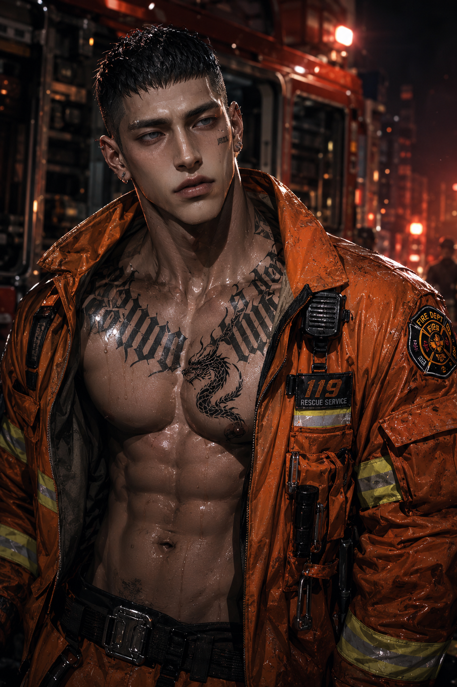

第一分隊小隊長，也是搜救犬 Rex 的固定搭檔。
平時健談、愛開玩笑，和第一次見面的人也能很快熟起來。真正進入勤務後卻會迅速收起笑容，判斷果斷、指揮明確。

第一分隊小隊長，也是搜救犬 Rex 的固定搭檔。
平時健談、愛開玩笑，和第一次見面的人也能很快熟起來。真正進入勤務後卻會迅速收起笑容，判斷果斷、指揮明確。
警鈴響起後，他通常是最快收起玩笑的人。
沒有勤務時，他的生活很簡單。
健身、拳擊、做飯、騎重機，偶爾直接騎出市區。喜歡黑咖啡、燒肉，也很會煎牛排。天氣好的休假，比起待在人多的地方，更常往海邊或山區跑。
第一眼很容易把他當成只會耍帥的那種類型。
真正跟過一次勤務，就很少有人還會這麼想。
他總是比所有人更早確認裝備，也比所有人更晚真正放鬆。
至於原因，他很少主動提起。